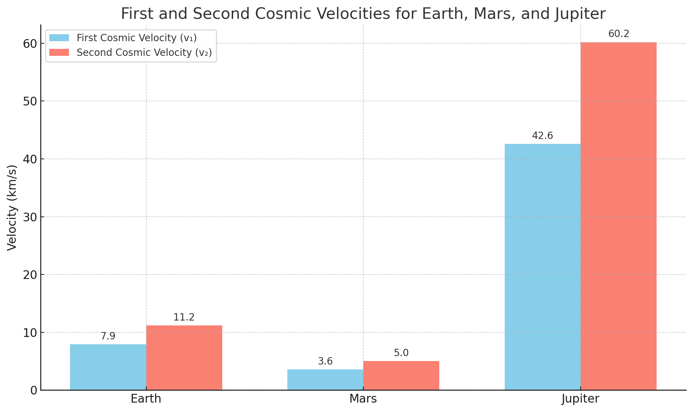
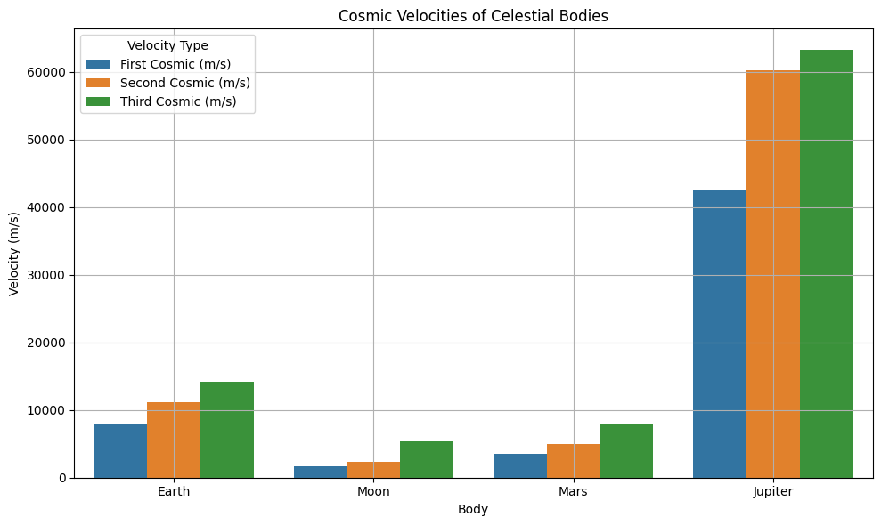
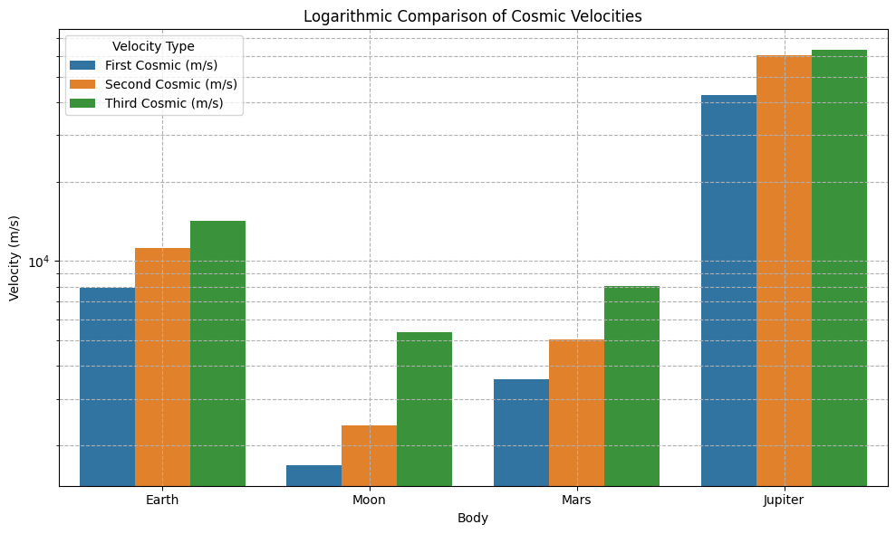
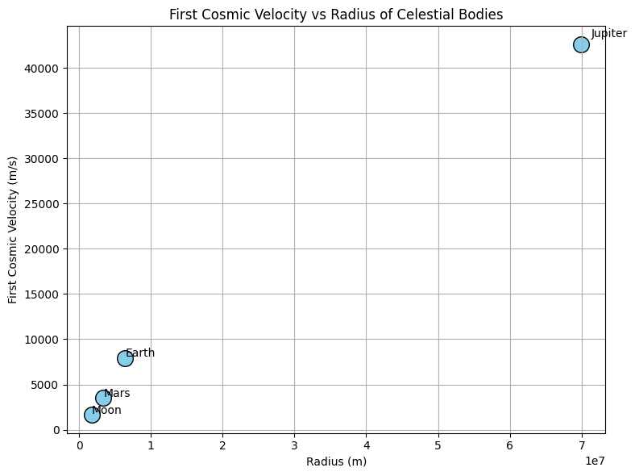
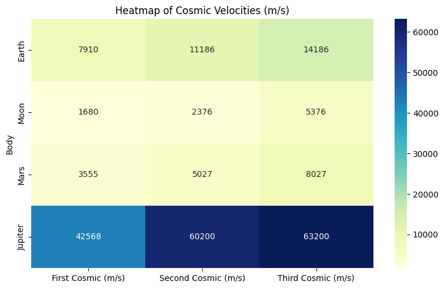
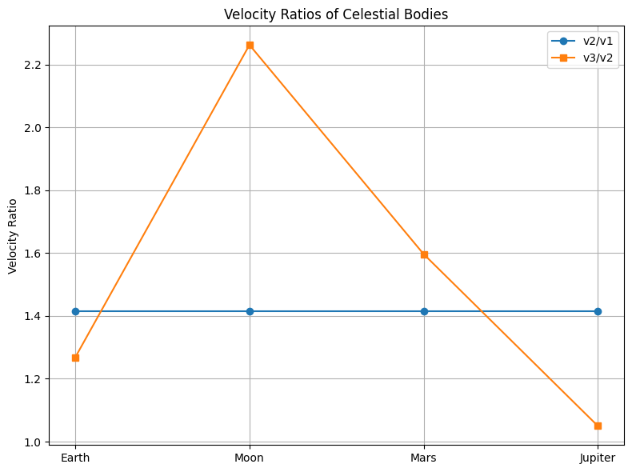
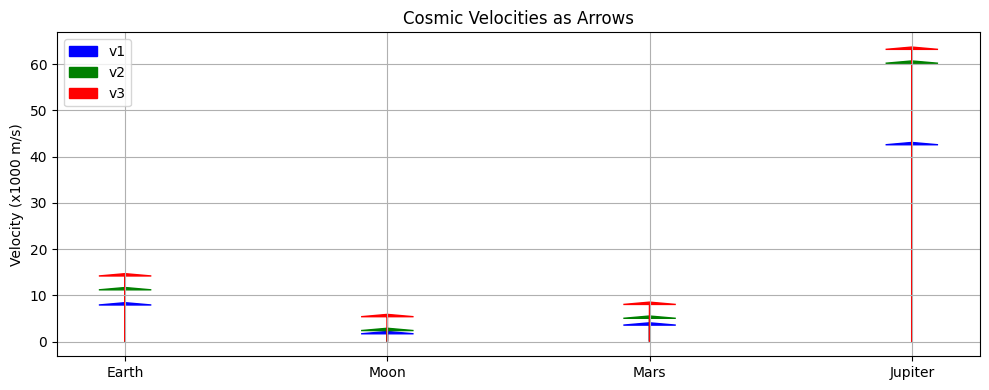

Problem 2

Cosmic Velocities and Escape Speed
1. Definitions and Physical Meaning
First Cosmic Velocity (Orbital Velocity) The minimum speed required for a body to maintain a stable circular orbit just above the surface of a planet or moon.
Second Cosmic Velocity (Escape Velocity) The minimum speed required to break free from the gravitational pull of a celestial body without further propulsion.
Third Cosmic Velocity (Heliocentric Escape Velocity) The speed required to leave the gravitational field of a planet and the Solar System.
A simplified approximation:
Where \(\Delta v_{\text{sun}}\) is the additional velocity needed to escape the Sun’s gravity at the location of the planet.
2. Derivations
First Cosmic Velocity
Derived from the balance between gravitational and centripetal forces:
Solving for \(v\):
Second Cosmic Velocity
Using conservation of mechanical energy (total energy at escape = 0):
Solving for \(v\):
Third Cosmic Velocity
To escape the gravitational pull of both a planet and the Sun:
The exact value of \(\Delta v_{\text{sun}}\) depends on the orbital position and velocity of the planet within the Solar System.
3. Cosmic Velocity Values for Celestial Bodies
| Celestial Body | First Cosmic Velocity (m/s) | Second Cosmic Velocity (m/s) | Third Cosmic Velocity (m/s) |
|---|---|---|---|
| Earth | \~7900 | \~11200 | \~14200 |
| Moon | \~1700 | \~2400 | \~5400 |
| Mars | \~3500 | \~5000 | \~8000 |
| Jupiter | \~43000 | \~60000 | \~63000 |
📌 Note: The third cosmic velocity is estimated based on a simplified model and includes an assumed heliocentric velocity delta (\~3 km/s for Earth).
     
4. Visual Comparison
A comparison chart below shows how cosmic velocities vary among different celestial bodies. Jupiter stands out due to its massive gravity well, requiring much higher velocities.
(See attached plot for visualization)
5. Relevance to Space Exploration
- First Cosmic Velocity: Required to place satellites into orbit and support operations like the ISS.
- Second Cosmic Velocity: Needed for missions to the Moon, Mars, or interplanetary travel.
- Third Cosmic Velocity: Critical for interstellar probes (e.g., Voyager 1, New Horizons) that aim to leave the Solar System.
Would you like this as a .md, .pdf, or Jupyter Notebook file? I can prepare it in any format you want.